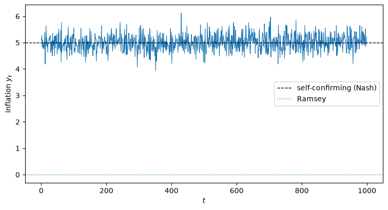
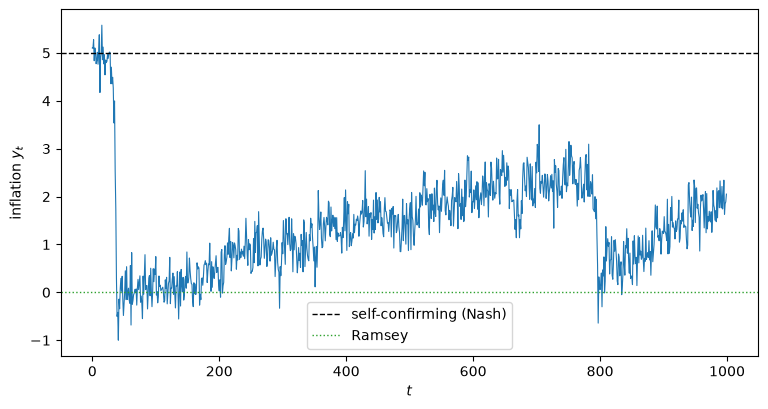
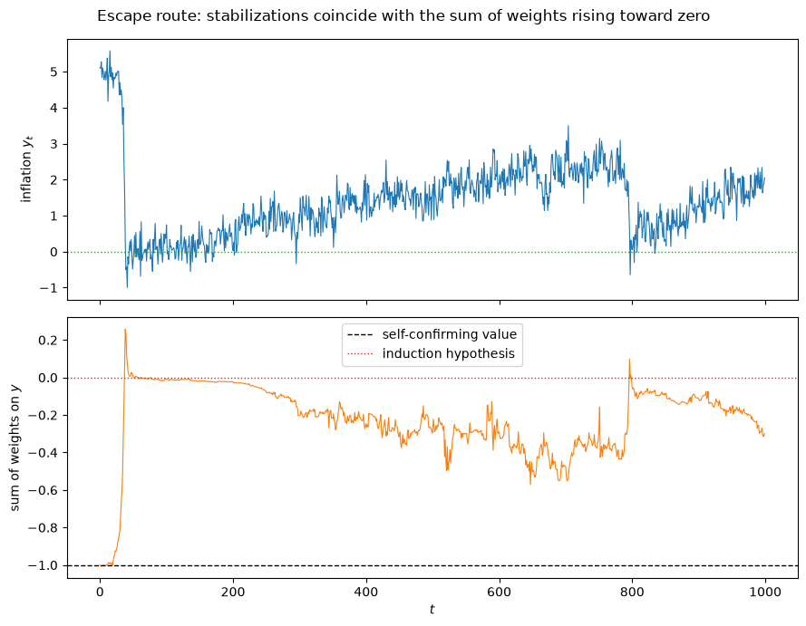
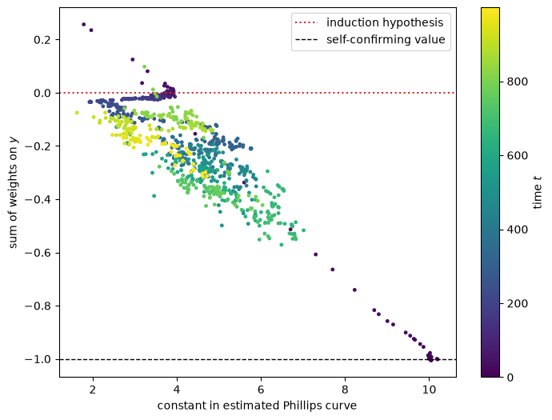
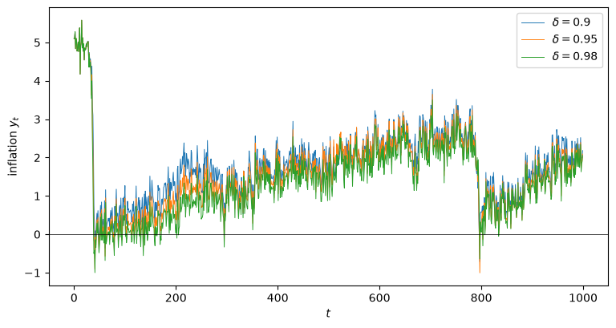
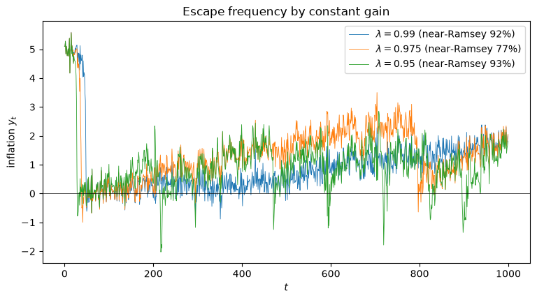

102. 适应性学习与逃逸动态#
102.1. 概述#
本讲座是 [Sargent, 1999] 所构建理论的集大成之作。
它遵循该书第 8 章——这是全书最具野心的一章，而本系列此后的所有内容，要么进一步深化其分析（逃离纳什通胀、先验、逃逸与学习循环），要么将其工具应用于更晚近的一段历史事件（失落的征服：2020 年代的美联储政策），要么对其核心论断进行实证检验（漂移与波动率）。
在 自我确认均衡 中，政府对菲利普斯曲线持有固定的信念——这些信念被由它们本身所生成的数据所证实。
在这里，我们把政府变成一个实时经济计量学家。
每一期它都：
根据到目前为止观测到的数据，通过递归最小二乘法重新估计其菲利普斯曲线；并且
根据其当前的估计值，设定通货膨胀率为 phelps 问题 第一期建议的水平。
我们要问的是：这样一个适应性的政府是否会收敛到自我确认均衡。
答案取决于一个单一的参数——支配旧数据被折扣速度的增益（gain）：
若采用实现最小二乘法的递减增益，均值动态会将经济拉向自我确认均衡，我们不会得到什么新结果：系统被困在纳什结果附近。
若采用常数增益，主体会对过去数据打折扣，收敛被阻止，新的结果便会涌现：系统会反复地从自我确认均衡逃逸向拉姆齐（零通胀）结果，呈现出颇似沃尔克时代到来的自发稳定化现象。
这些逃逸正是 美国通货膨胀的兴衰 中”econometric 政策评估的证明”故事的核心：一个学习索洛-托宾分布滞后版本自然率假说的适应性政府，会因偶然的观察结果而稳定住通货膨胀。
本讲座复现、分析并重新诠释了类似克里斯托弗·西姆斯（Christopher Sims）和郑喜泰（Heetaik Chung）的模拟结果 [Chung, 1990, Sims, 1988]。
在这里，我们通过模拟来研究这些逃逸；逃离纳什通胀 随后将其解析地刻画为第二个确定性 ODE，而 先验、逃逸与学习循环 则探讨政府关于系数漂移的先验如何重塑这两种力量。
让我们导入所需的库：
import matplotlib.pyplot as plt
import numpy as np
from scipy.linalg import solve_discrete_are
102.2. 递归算法入门#
本节是一个独立完整的入门介绍。
它构建了贯穿后文全部内容的两个分析对象——均值动态（mean dynamics）与逃逸路径（escape routes）——并解释了同一个递归公式既可以被视为计算自我确认均衡的算法，也可以被视为政府实时适应的模型的意义所在。
这部分内容较为技术性，只想了解结论的读者可以直接跳到下面的模拟部分，需要时再回来查阅。
102.2.1. 信念、矩条件与自我确认均衡#
在经典识别方案下，自我确认均衡由政府关于某些总体矩及其所隐含的回归系数的信念所确定。
在经典识别方案下，这些信念由三元组 \((\gamma, \, E X_{C} X_{C}^\top, \, E U X_{C})\) 度量，其中 \(\gamma\) 是菲利普斯曲线系数向量。
在本讲座的适应性模型中，这些对象的时间 \(t\) 的取值是经济的状态变量之一；它们只有在自我确认均衡中才不再作为状态变量存在，因为在那里它们是常数。
经典识别方案下的自我确认均衡满足以下矩条件：
其中数学期望是关于 \((U_t, X_{Ct})\) 的分布计算的，而该分布通过菲尔普斯问题的解 \(h(\gamma)\) 依赖于 \(\gamma\)。
自我指涉正是通过分布对 \(\gamma\) 的这种依赖性而浮现出来的：政府的信念塑造其政策，而政策塑造了随后用来检验信念的数据。
(102.1) 的第一行是 \(\gamma\) 的最小二乘正规方程，两边预先乘以二阶矩矩阵的逆；第二行将 \(R_{XC}\) 定义为回归量的二阶矩矩阵。
将所有未知量组合成一个向量会比较方便：
其中 \(\operatorname{col}(R_{XC})\) 将 \(R_{XC}\) 的各列堆叠起来。
矩条件 (102.1) 随即可以写成紧凑形式：
其中 \(\zeta\) 是一个随机向量，期望是关于其分布计算的（同样，该分布依赖于 \(\phi\)）。
自我确认均衡是 \(b\) 的一个零点，即一组信念 \(\phi_f\)，满足：
本节余下的部分描述了寻找这样一个零点的递归算法，以及一种将每个计算算法转化为实时适应模型的视角转换。
102.2.2. 迭代法#
最简单的算法通过以下公式计算估计值序列 \(\{\phi_k\}\)：
其中，用来计算 (102.3) 中定义 \(b(\phi_k)\) 的期望所用的分布，本身是在当前估计值 \(\phi_k\) 处计算的，而 \(a > 0\) 是步长。
这正是 自我确认均衡 中用来计算自我确认均衡的松弛算法。
每一步都需要计算数学期望 \(b(\phi) = \mathbb{E}[F(\phi, \zeta)]\)——这正是我们在那里需要矩（李雅普诺夫）公式的原因。
102.2.3. 随机逼近#
将 (102.5) 中的均值 \(b(\phi_n)\) 替换为单次随机抽样 \(F(\phi_n, \zeta_n)\)，并让步长来完成平均，就得到了 (102.5) 的一个随机版本：
要研究 (102.6) 的极限行为，我们定义人为时间（artificial time）：
构造抽样过程 \(\phi(t_n) = \phi_n\)，并对其进行插值（通常是分段线性插值），得到一个连续时间过程 \(\phi^o(t)\)。
随后，随着 \(n \to \infty\)，用一个连续时间过程来逼近 \(\phi^o(t)\)，并利用它来刻画原始序列的尾部行为。
增益序列 \(\{a_n\}\) 不同的递减速率会产生不同的逼近过程，因为它们改变了从实际时间 \(n\) 到人为时间 \(t_n\) 的映射 (102.7)。
备注
递归随机逼近起源于 [Robbins and Monro, 1951]，他设计了 (102.6) 用于在噪声观测下寻找回归函数的根；以及 [Kiefer and Wolfowitz, 1952]，他将其改造用于寻找回归函数的最大值（下文提到的“K-W”算法）。
用于分析此类递归的“ODE 方法”——即用微分方程的解来逼近插值过程——归功于 [Ljung, 1977]；书籍级的详尽处理见 [Benveniste et al., 1990] 和 [Kushner and Yin, 2003]。
将其用于研究自我指涉宏观经济模型中的学习问题，由 [Marcet and Sargent, 1989] 开创，并被 [Evans and Honkapohja, 2001] 全面发展。
102.2.4. 均值动态#
[Kushner and Clark, 1978] 和 [Ljung, 1977] 的经典随机逼近算法将增益设定为按 \(a_n \sim 1/n\) 的速度递减（至少对某个 \(N > 0\) 满足 \(t \geq N\)）。
这使得我们能够对 (102.6) 几乎必然收敛到 \(b(\phi)\) 的零点这一结论做出强有力的论断。
当 \(a_n \sim 1/n\) 时，随着 \(n \to \infty\)，插值过程 \(\phi^o(t)\) 逼近以下常微分方程的解：
我们称之为均值动态——这是 信誉问题 附录中推导的标量最小二乘学习 ODE 的向量化推广。
大数定律使连续时间逼近中的随机项以足够快的速度消失，从而使均值动态 (102.8) 刻画了随机过程 (102.6) 的尾部行为。
因此：
如果算法收敛（几乎必然地），它就收敛到均值动态的零点 \(b(\phi) = 0\)——即一个自我确认均衡；并且
ODE (102.8) 携带着关于算法局部与全局稳定性的信息。
局部稳定性由 \(b\) 在静止点处雅可比矩阵的特征值支配：如果所有特征值的实部都为负，该静止点就是局部稳定的；而在关于增益的一定条件下，实部最大的特征值支配着收敛的速率（通常的 \(\sqrt{T}\) 速率要求该特征值低于 \(-\tfrac12\)）。
我们将在下面看到，在我们所用参数下，经典模型的这个特征值恰好位于 \(-\tfrac12\) 的边界上，因此收敛是边际性的——事实证明，这一点对系统能否轻易逃逸至关重要。
备注
[Brock and Hommes, 1997] 构建的模型，其全局行为由远离理性预期均衡的稳定均值动态，以及在均衡附近适应的局部不稳定性共同驱动——这是一种从学习中产生内生波动的互补机制。
102.2.5. 常数增益与依分布收敛#
我们同样关注 (102.6) 的另一版本，其中对所有 \(n\) 都采用常数增益 \(a_n = \epsilon > 0\)。
常数增益算法的极限定理使用了一种弱于 \(a_n \sim 1/n\) 时可用的几乎必然收敛的收敛概念——即依分布收敛。
它们关注的是当 \(\epsilon \to 0\) 同时 \(n\epsilon \to +\infty\) 时的小噪声极限。
同样使用人为时间 (102.7)，构造过程族：
对其插值以得到 \(\phi^\epsilon(t)\)，并研究其小 \(\epsilon\) 极限。
杜皮伊（Dupuis）与库什纳（Kushner），见 [Kushner and Yin, 2003]，以及其他学者验证了在何种条件下，当 \(\epsilon \to 0\) 且 \(\epsilon n \to \infty\) 时，过程 \(\phi_n^\epsilon\) 依分布收敛到同一均值动态 (102.8) 的零点；均值动态所需满足的限制条件与经典 \(a_n \sim 1/n\) 理论中的要求相同。
与递减增益算法不同，常数增益算法不会稳定下来：\((\gamma, R_{XC})\) 会收敛到一个平稳随机过程，围绕自我确认均衡永久地波动——并偶尔远离它。
102.2.6. 逃逸路径与大偏差理论#
对本讲座而言，常数增益机制中最重要的特征不是向 \(\phi_f\) 的收敛，而是远离它的偏离。
我们对远离自我确认均衡的运动与趋向它的运动同样感兴趣，因为模拟中反复出现的稳定化现象恰恰就是这样的偏离。
大偏差理论通过三个对象来刻画这些偏离。
首先是（创新过程 \(F(\phi_n, \zeta_n)\) 某种平均化版本的）对数矩生成函数：对于与 \(F\) 维数一致的向量 \(\theta\)，
其中期望是关于 \(\zeta\) 的分布计算的。
备注
方程 (102.10) 是一个启发性的简写。
实际进入理论的对象是一个时间平均极限；[Dupuis and Kushner, 1987] 和 [Kushner and Yin, 2003] 假设对每个 \(\delta > 0\)，以下极限在任意紧集上关于 \(\phi_i, \alpha_i\) 一致存在： $\( \sum_{i=0}^{T/\delta - 1} \delta\, H(\alpha_i, \phi_i) = \lim_{N \to \infty} \frac{\delta}{N} \log \mathbb{E} \exp \sum_{i=0}^{T/\delta - 1} \alpha_i^\top \sum_{j=iN}^{iN+N-1} F(\phi_i, \zeta_j) . \)\( 内部的求和对长度为 \)N$ 的一个区块内的创新项做平均；双重极限使我们能够处理序列相关的创新项。
其次是 \(H\) 的勒让德变换（Legendre transform），它扮演速率函数的角色：
第三是行动泛函（action functional），它衡量候选逃逸路径 \(\phi(\cdot)\) 的“代价”：
杜皮伊和库什纳将寻找最可能逃逸路径的问题转化为一个确定性控制问题。
设 \(D\) 是包含 \(\phi_f\) 的一个紧集，其边界为 \(\partial D\)，设 \(C[0,T]\) 是 \([0,T]\) 上的连续函数集合。
逃逸路径是求解以下问题的路径 \(\tilde\phi(\cdot)\)：
假设最小化路径 \(\tilde\phi(\cdot)\) 是唯一的，并设 \(t_D^\epsilon\) 为常数增益过程 \(\phi^\epsilon(t)\) 离开 \(D\) 的首个时刻，[Dupuis and Kushner, 1987] 证明了对每个 \(\delta > 0\) 都有：
换句话说：在系统逃离集合 \(D\) 的条件下，它离开该集合的位置会接近最小行动路径的终点——因此逃逸具有确定的方向和形态，尽管它是由偶然性触发的。
正是在这个意义上，下文中的逃逸虽然不需要任何巨大的冲击触发，却“看起来有目的性”：它们遵循 (102.13) 所规定的最小行动路径。
一个关键的对比：均值动态 (102.8) 不依赖于其周围的噪声，而逃逸路径却依赖于噪声——噪声不仅在 (102.8) 周围添加随机波动，它还开辟出了这第二类路径。
备注
其数学基础是 [Freidlin and Wentzell, 1998]（特别是其第 4 章）关于随机扰动动态系统的大偏差理论，被 [Dupuis and Kushner, 1987] 和 [Dupuis and Kushner, 1989] 专门用于随机逼近；一种弱收敛处理见 [Dupuis and Ellis, 1997]。
102.2.7. 一个可处理的行动泛函#
逃逸路径的计算承诺提供关于算法中心趋势的低成本信息，但行动泛函 (102.12) 通常难以计算。
一个重要的特例极大地简化了它。
假设创新项是加性的且服从高斯分布：
其中 \(\zeta_n\) 是平稳的且服从高斯分布，但不一定是序列不相关的，并定义 \(R = \sum_j \mathbb{E}\, \zeta_t \zeta_{t-j}^\top\)。
那么行动泛函取如下二次形式：
其中 \((\cdot)^{+}\) 是摩尔-彭若斯广义逆（用于处理 \(\sigma R \sigma^\top\) 可能出现的随机奇异性）。
权重 \(h(s)\) 依赖于增益：当 \(a_n = a_0 / n^\gamma\) 中的 \(\gamma = 1\) 时，\(h(s) = \exp(s)\)；当 \(\gamma < 1\) 时，\(h(s) = 1\)。
将 (102.15) 理解为一种代价，它惩罚实际漂移 \(\tfrac{d}{ds}\phi\) 与均值漂移 \(b(\phi)\) 之间的偏离，并按局部噪声协方差 \(\sigma R \sigma^\top\) 的逆对每个方向加权。
因此最小行动逃逸路径会穿过均值动态较弱而噪声信息量较大的区域——而在我们的模型中，这恰恰是归纳假设所指的方向。
备注
这个二次行动泛函正是 [Cho et al., 2002] 中所最小化的对象，该文是本讲座模型的正式发表版本。
他们求解了纳什自我确认均衡的控制问题 (102.13)，并从解析上证明了最小行动逃逸会将通货膨胀权重之和推向激活归纳假设的值——也就是趋向拉姆齐结果。
[Sargent and Williams, 2005] 研究了政府先验（等价地，即增益算法的协方差结构，我们的 \(P_0\) 与遗忘因子）如何重塑逃逸，而 [Kasa, 2004] 将同样的大偏差机制应用于反复出现的货币危机。
102.2.8. 从计算到适应#
前述递归公式是作为逼近自我确认均衡的算法被引入的。
同样的数学也告诉我们，当我们将自我确认均衡模型改造为纳入实时适应时会发生什么——只需将 \(\phi_n\) 理解为政府在时间 \(n\) 的信念，而非某个求解器的第 \(n\) 次迭代结果。
以下两个事实统领了后文的一切：
实现最小二乘法的增益序列（按 \(1/t\) 递减）使均值动态将经济拉向自我确认均衡；而
递减速度更慢的增益序列——极限情形下即为对过去打折扣的常数增益——则阻止了这种拉力，并增加了逃逸动态影响结果的频率。
备注
一段简短的思想史。
[Lucas and Prescott, 1971] 曾摒弃对矩条件 (102.4) 进行迭代这一计算策略，但 [Townsend, 1983] 却使用了它。
[Woodford, 1990] 和 [Marcet and Sargent, 1989] 用均值动态 (102.8) 建立了含有自我指涉的模型中最小二乘学习收敛于理性预期的条件，两者都要求 \(b(\phi)\) 的连续性。
曹寅坤（In-Koo Cho）研究了带有不连续 \(b(\phi)\) 的问题，这种不连续性源自可信度和搜索问题中不连续的决策规则（触发策略）；为了使最小二乘学习逼近理性预期，他使用了满足 \(\tfrac{1}{\log n} < a_n < \tfrac{1}{\sqrt n}\) 的增益，这为 (102.6) 产生了一个扩散逼近，促进了足够的试探以发现均衡。
[Kandori et al., 1993] 运用相关数学方法，通过突变在博弈中选择长期均衡，而罗杰·迈尔森（Roger Myerson）将逃逸路径的计算应用于一个投票问题。
这些学习方法的现代综合体现在 [Evans and Honkapohja, 2001] 中。
102.3. 适应性模型#
现在我们来构建经典的适应性模型。
102.3.1. 政府的信念与行为#
政府相信存在一个分布滞后的菲利普斯曲线：
在时间 \(t\) 到达时，凭借估计值 \(\gamma_{t-1}\)，政府通过求解菲尔普斯问题来设定通货膨胀的系统性部分，就好像 \(\gamma_{t-1}\) 将永远支配菲利普斯曲线一样：
随后它通过递归最小二乘法（RLS）更新其信念：
其中 \(\{g_t\}\) 是增益序列。
最小二乘法设定 \(g_t = 1/t\)；常数增益算法设定 \(g_t = g_0 > 0\)，并对过去的观测打折扣，如果政府怀疑菲利普斯曲线会随时间漂移，这样做是合理的。
假设公众知道政府的规则，因此其通货膨胀预测为 \(x_t = h(\gamma_{t-1}) X_{t-1}\)，即 (102.17) 中的系统性部分。
失业率是由 自我确认均衡 中实际的菲利普斯曲线在 \(\rho_1 = \rho_2 = 0\) 时生成的：
102.3.2. 带滞后项的菲尔普斯问题#
给定一个信念 \(\gamma\)，决策规则 \(h(\gamma)\) 求解一个 LQ 控制问题。
将所信奉的菲利普斯曲线写为 \(U_t = \gamma_0 y_t + c^\top s_t\)，其中 \(\gamma_0\) 是当期通货膨胀的系数，\(c\) 收集了状态 \(s_t = X_{t-1}\) 上的系数。
政府最小化 \(\mathbb{E}\sum_t \delta^t (U_t^2 + y_t^2)\)，因此每期损失为 \(s_t^\top (cc^\top) s_t + (\gamma_0^2 + 1) y_t^2 + 2\gamma_0\, y_t\, c^\top s_t\)，状态按 \(s_{t+1} = A s_t + B y_t\) 演化，其中：
我们使用 scipy 的离散代数李卡提方程求解器来求解这个折扣 LQ 问题。
class AdaptivePhillips:
"""
Classical adaptive Phillips curve model: the government re-estimates a
distributed-lag Phillips curve by recursive least squares and each period
acts on the first-period recommendation of the Phelps problem.
"""
def __init__(self, θ=1.0, U_star=5.0, σ1=0.3, σ2=0.3, δ=0.98):
self.θ, self.U_star, self.σ1, self.σ2, self.δ = θ, U_star, σ1, σ2, δ
# classical self-confirming belief: U = -θ y + (θ²+1)U*
self.γ_sce = np.array([-θ, 0.0, 0.0, 0.0, 0.0, (θ**2 + 1) * U_star])
# self-confirming moment matrix M = E[X_C X_C'] and residual variance
self.M = self._sce_moments()
self.σC2 = σ1**2 # var(U | X_C) at the SCE
def _sce_moments(self):
"E[X_C X_C'] at the serially-uncorrelated classical SCE."
θ, σ1, σ2 = self.θ, self.σ1, self.σ2
μU, μy = self.U_star, self.θ * self.U_star
Σ = {('U', 'U'): θ**2 * σ2**2 + σ1**2, ('y', 'y'): σ2**2,
('U', 'y'): -θ * σ2**2, ('y', 'U'): -θ * σ2**2}
# regressors: (time, type) for [y_t, U_{t-1}, U_{t-2}, y_{t-1}, y_{t-2}, 1]
regs = [(0, 'y'), (1, 'U'), (2, 'U'), (1, 'y'), (2, 'y'), (None, 'c')]
mean = {'U': μU, 'y': μy, 'c': 1.0}
M = np.zeros((6, 6))
for i, (ti, tyi) in enumerate(regs):
for j, (tj, tyj) in enumerate(regs):
if tyi == 'c' or tyj == 'c' or ti != tj:
M[i, j] = mean[tyi] * mean[tyj]
else:
M[i, j] = Σ[(tyi, tyj)] + mean[tyi] * mean[tyj]
return M
def phelps_h(self, γ):
"Government decision rule ŷ_t = h(γ)·X_{t-1} for belief γ."
δ, γ0, c = self.δ, γ[0], γ[1:]
R = np.outer(c, c)
Q = np.array([[γ0**2 + 1.0]])
N = (γ0 * c).reshape(1, -1)
A = np.zeros((5, 5)); B = np.zeros((5, 1))
A[0, :] = c; B[0, 0] = γ0 # U_t
A[1, 0] = 1.0 # U_{t-1}
B[2, 0] = 1.0 # y_t
A[3, 2] = 1.0 # y_{t-1}
A[4, 4] = 1.0 # constant
sb = np.sqrt(δ)
Ad, Bd = sb * A, sb * B
P = solve_discrete_are(Ad, Bd, R, Q, s=sb * N.T)
F = np.linalg.solve(Q + Bd.T @ P @ Bd, Bd.T @ P @ Ad + N)
return -F.ravel()
我们使用 [Sargent, 1999] 附录 A 中递归最小二乘法的卡尔曼滤波实现。
遗忘因子 \(\lambda \in (0, 1]\) 映射到增益：\(\lambda = 1\) 给出最小二乘法（\(g_t \to 1/t\)），而 \(\lambda < 1\) 给出常数增益 \(g_0 = 1 - \lambda\)。
先验被初始化，就好像政府已经观测到 \(T\) 期的自我确认均衡数据一样，通过 \(P_0 = (\sigma_C^2 / T)\, M^{-1}\)；\(T\) 越大意味着先验越紧。
def simulate(model, λ, T_prior, n=1000, seed=0):
"Simulate the adaptive system. λ=1 is least squares; λ<1 is constant gain."
rng = np.random.default_rng(seed)
θ, U_star, σ1, σ2 = model.θ, model.U_star, model.σ1, model.σ2
γ = model.γ_sce.copy()
P = (model.σC2 / T_prior) * np.linalg.inv(model.M)
R2 = model.σC2
g0 = 1 - λ
U1 = U2 = U_star
y1 = y2 = θ * U_star
y_path, U_path, sumweights, constant = (np.empty(n) for _ in range(4))
for t in range(n):
h = model.phelps_h(γ)
X_lag = np.array([U1, U2, y1, y2, 1.0])
yhat = h @ X_lag
v2, v1 = σ2 * rng.standard_normal(), σ1 * rng.standard_normal()
y = yhat + v2
U = U_star - θ * (y - yhat) + v1
φ = np.array([y, U1, U2, y1, y2, 1.0]) # X_C,t
denom = R2 + φ @ P @ φ
gain = P @ φ / denom
γ = γ + gain * (U - γ @ φ)
R1 = (g0 / (1 - g0)) * P if λ < 1 else 0.0 # constant vs decreasing
P = P - np.outer(P @ φ, φ @ P) / denom + R1
y_path[t], U_path[t] = y, U
sumweights[t] = γ[0] + γ[3] + γ[4] # weights on current+lagged y
constant[t] = γ[5]
U2, U1 = U1, U
y2, y1 = y1, y
return dict(y=y_path, U=U_path, sumweights=sumweights, constant=constant)
model = AdaptivePhillips()
h_sce = model.phelps_h(model.γ_sce)
print("decision rule at the self-confirming belief:")
print(f" h(γ_sce) = {np.round(h_sce, 3)} (a constant rule of "
f"{h_sce[-1]:.1f} = Nash inflation)")
decision rule at the self-confirming belief:
h(γ_sce) = [-0. -0. -0. -0. 5.] (a constant rule of 5.0 = Nash inflation)
在自我确认信念处，菲尔普斯规则是一个等于纳什通货膨胀率的常数，信念自我复制——适应性系统的静止点正是 自我确认均衡 中的自我确认均衡。
102.4. 最小二乘法学习收敛#
我们遵循 [Sargent, 1999] 的做法，将真实的数据生成参数设定为 自我确认均衡 结尾处的经典示例：\(U^* = 5\)、\(\theta = 1\)、\(\sigma_1 = \sigma_2 = 0.3\)、\(\rho_1 = \rho_2 = 0\)、\(\delta = 0.98\)。
经典自我确认均衡具有序列不相关的 \((U, y)\)，围绕均值 \((5, 5)\) 波动。
首先，采用最小二乘法（递减增益）。
ls = simulate(model, λ=1.0, T_prior=5000, n=1000, seed=1)
fig, ax = plt.subplots(figsize=(9, 4.5))
ax.plot(ls['y'], lw=0.8)
ax.axhline(5, color='k', ls='--', lw=1, label='self-confirming (Nash)')
ax.axhline(0, color='C2', ls=':', lw=1, label='Ramsey')
ax.set_xlabel('$t$')
ax.set_ylabel('inflation $y_t$')
ax.legend()
plt.show()

图 102.1 最小二乘法下的经典适应性模型：通货膨胀紧贴着自我确认值#
在最小二乘法下，均值动态占据主导：通货膨胀紧贴着自我确认值 5，模拟结果看起来就像是从自我确认均衡本身抽取出来的一样。
我们没有得到什么新结果——政府被困在纳什结果附近。
102.5. 常数增益与逃逸动态#
现在赋予政府一个常数增益 \(\lambda = 0.975\)，使其对过去数据打折扣。
cg = simulate(model, λ=0.975, T_prior=300, n=1000, seed=1)
fig, ax = plt.subplots(figsize=(9, 4.5))
ax.plot(cg['y'], lw=0.8)
ax.axhline(5, color='k', ls='--', lw=1, label='self-confirming (Nash)')
ax.axhline(0, color='C2', ls=':', lw=1, label='Ramsey')
ax.set_xlabel('$t$')
ax.set_ylabel('inflation $y_t$')
ax.legend()
plt.show()

图 102.2 Classical adaptive model under a constant gain: recurrent escapes toward Ramsey#
通货膨胀最初接近自我确认值 5，随后几乎跌落至零并停留在那里很长一段时间，然后缓慢地朝 5 迈进，却又再一次被推向零。
将系统拉向自我确认均衡的均值动态，遭到了一种反复出现的力量的对抗，这种力量将通货膨胀推向接近拉姆齐结果的水平。
关键在于，没有大的冲击触发这些稳定化：它们是常数增益学习动态的一个内生特征。
print(f"constant-gain inflation: mean {cg['y'].mean():.2f}, "
f"fraction of periods near Ramsey (y<2): {(cg['y'] < 2).mean():.0%}")
constant-gain inflation: mean 1.41, fraction of periods near Ramsey (y<2): 77%
102.6. 逃逸路径与归纳假设#
为什么系统会朝拉姆齐方向逃逸，而不是朝其他方向？
答案是 适应性预期与费尔普斯问题 中的归纳假设：当估计出的菲利普斯曲线中当期与滞后通货膨胀的权重之和趋近于零时，菲尔普斯问题会建议政府降低通货膨胀。
让我们将通货膨胀与这一权重之和一起绘图。
fig, axes = plt.subplots(2, 1, figsize=(9, 7), sharex=True)
axes[0].plot(cg['y'], lw=0.8)
axes[0].axhline(0, color='C2', ls=':', lw=1)
axes[0].set_ylabel('inflation $y_t$')
axes[1].plot(cg['sumweights'], lw=0.8, color='C1')
axes[1].axhline(-1, color='k', ls='--', lw=1, label='self-confirming value')
axes[1].axhline(0, color='C3', ls=':', lw=1, label='induction hypothesis')
axes[1].set_xlabel('$t$')
axes[1].set_ylabel('sum of weights on $y$')
axes[1].legend()
fig.suptitle('Escape route: stabilizations coincide with the sum of '
'weights rising toward zero')
plt.tight_layout()
plt.show()

图 102.3 稳定化恰好对应着通货膨胀权重之和上升趋近于零#
每一次稳定化都恰好对应着权重之和从其自我确认值 \(-1\) 跳向零。
当它达到零时，归纳假设（暂时）得到满足，菲尔普斯问题要求近乎拉姆齐水平的通货膨胀，而由此产生的数据短暂地强化了归纳假设——从技术意义上说这不是自我确认的，但却是自我强化的。
我们可以通过绘制估计出的菲利普斯曲线中常数项与权重之和的联合路径，直接看出这条逃逸路径。
fig, ax = plt.subplots(figsize=(8, 6))
sc = ax.scatter(cg['constant'], cg['sumweights'], c=np.arange(len(cg['y'])),
cmap='viridis', s=6)
ax.axhline(0, color='C3', ls=':', lw=1.5, label='induction hypothesis')
ax.axhline(-1, color='k', ls='--', lw=1, label='self-confirming value')
ax.set_xlabel('constant in estimated Phillips curve')
ax.set_ylabel('sum of weights on $y$')
ax.legend()
plt.colorbar(sc, label='time $t$')
plt.show()

图 102.4 信念空间中的逃逸路径，按时间着色#
信念大部分时间都停留在自我确认值附近（权重之和 \(\approx -1\)），但反复地朝归纳线（权重之和 \(= 0\)）猛冲——这正是逃逸路径，沿着这条路径，政府学会了一个索洛-托宾版本的自然率假说并稳定住了通货膨胀。
102.7. 与预测误设均衡的关系#
近乎拉姆齐的这些插曲，让人想起 最优错误设定信念 和 自我确认均衡 中带有最优误设预测的均衡。
在那里，一个不含常数项但含单位根的预测模型能够很好地逼近一个含有常数项的真实模型。
在这里，一种类似风味的逼近在近乎拉姆齐的插曲中发挥作用：政府估计出的菲利普斯曲线，通过将权重之和推向零，利用归纳假设来逼近一个常数项——只不过被逼近的模型并非固定不变，而是随着政府自身的信念通过菲尔普斯问题反馈回来而不断变化。
102.8. 折扣因子的作用#
朝拉姆齐方向反复出现的稳定化，取决于折扣因子 \(\delta\) 是否接近于 1。
降低 \(\delta\) 会提高低通货膨胀插曲期间观测到的通货膨胀率，这与归纳假设下菲尔普斯问题的运作机制是一致的。
fig, ax = plt.subplots(figsize=(9, 4.5))
for δ in [0.90, 0.95, 0.98]:
m = AdaptivePhillips(δ=δ)
sim = simulate(m, λ=0.975, T_prior=300, n=1000, seed=1)
ax.plot(sim['y'], lw=0.7, label=rf'$\delta = {δ}$')
ax.axhline(0, color='k', lw=0.5)
ax.set_xlabel('$t$')
ax.set_ylabel('inflation $y_t$')
ax.legend()
plt.show()

图 102.5 随着政府变得更有耐心，向拉姆齐方向的逃逸变得更加显著#
102.9. 预期效用#
这个适应性模型是大卫·克雷普斯（David Kreps）所称的预期效用（anticipated utility）模型的一个例子 [Kreps, 1998]。
政府对一个临时误设的模型——一个系数固定的菲利普斯曲线——加以调整，纳入最新的观测数据，并沿途重新优化。
在 \(t\) 时刻做决策时，它的行为就好像其当前的估计值 \(\gamma_{t-1}\) 将永远支配菲利普斯曲线一样，使用的是若 \(\gamma\) 真的是时间不变的话本应是最优的同一政策函数 \(h(\cdot)\)。
这是对理性预期的一个微小偏离：日历时间只通过漂移的信念 \(\gamma_t\) 进入。
与贝叶斯或稳健型决策者不同，一个预期效用型政府忽视了自身逐期模型误设的问题——它并不考虑自己的系数会漂移，即便它们确实在漂移。
然而，正如模拟所示，这种对理性的适度偏离已足以对美国通货膨胀的兴衰给出一个丰富的解释，并为”econometric 政策评估的证明”提供支撑。
102.10. 结论#
在很长的时间段内，一个适应性政府学会了产生优于纳什的结果。
这些结果来自适应性的反复动态：在最小二乘法下将系统拉向自我确认均衡的均值动态继续发挥作用，但在常数增益下，噪声使系统能够反复地逃逸向拉姆齐结果。
从一个自我确认均衡出发，适应性算法逐渐使政府将足够的权重放在归纳假设上，以至于偶然的观测结果最终促成了一次稳定化。
适应性使得政府的信念成为一种隐藏状态，它给通货膨胀和失业率注入了序列相关性——因此，一个外部预测者若使用随机系数模型，或者进行卢卡斯在其批判 [Lucas, 1976] 中所指出的那种不断调整，会做得更好。
在这个意义上，适应性模型包含了证明经济计量政策评估的基础——这正是 美国通货膨胀的兴衰 中两个故事的第二个。
最后这一观察是可以检验的，值得在任何人查看数据之前记录下模型的预测。
如果政府的信念确实是一个隐藏的漂移状态，那么对战后通货膨胀与失业率的简化形式描述应当显示出漂移的系数，而不仅仅是漂移的冲击方差。
漂移与波动率 将恰好这样一个模型拟合到数据上，并给出了结论——其中包括逃逸机制的一个预测，而数据并未能证实这一预测。
102.11. 练习#
练习 102.1
以上所有内容都取决于常数增益，因此值得看看其影响究竟有多大。
用 \(\lambda \in \{0.99, 0.975, 0.95\}\) 模拟经典适应性模型，比较通货膨胀朝拉姆齐逃逸的频率。
更大的增益（更小的 \(\lambda\)，对过去更快地打折扣）如何影响逃逸的频率？
备注
本练习的一个更具挑战性的版本是构建凯恩斯主义适应性模型，其中政府沿相反方向拟合菲利普斯曲线，将通货膨胀对失业率做回归。
回归量是 \(X_{K,t} = \begin{bmatrix} U_t & U_{t-1} & U_{t-2} & y_{t-1} & y_{t-2} & 1 \end{bmatrix}^\top\)； 政府在 \(y_t = \beta^\top X_{K,t} + \varepsilon_{K,t}\) 中估计 \(\beta\)，然后使用 自我确认均衡 中的反演公式 \(\gamma_1 = \beta_1^{-1}\)、\(\gamma_{-1} = -\beta_{-1}/\beta_1\) 将其反转为 \(\gamma\)，之后再求解菲尔普斯问题。
[Sargent, 1999] 指出，这一变体不像经典模型那样容易发生逃逸。
解答 练习 102.1
fig, ax = plt.subplots(figsize=(9, 4.5))
for λ in [0.99, 0.975, 0.95]:
sim = simulate(model, λ=λ, T_prior=300, n=1000, seed=1)
frac = (sim['y'] < 2).mean()
ax.plot(sim['y'], lw=0.6,
label=rf'$\lambda = {λ}$ (near-Ramsey {frac:.0%})')
ax.axhline(0, color='k', lw=0.5)
ax.set_xlabel('$t$')
ax.set_ylabel('inflation $y_t$')
ax.set_title('Escape frequency by constant gain')
ax.legend()
plt.show()

更大的常数增益（更小的 \(\lambda\)）对过去的数据打折扣更重，从而更有力地阻止了向自我确认均衡的收敛，产生了更频繁——尽管也更嘈杂——的朝拉姆齐结果的逃逸。
练习 102.2
图 8.1 与图 8.2 的对比取决于增益，但最小二乘法的结果同样取决于先验的紧密程度。
对先验紧密度 \(T \in \{500, 2000, 5000\}\)，模拟最小二乘系统（\(\lambda = 1\)），并报告多个随机种子下的平均通货膨胀率。
解释为什么更松的先验（更小的 \(T\)）会使即便是最小二乘系统也容易发生逃逸。
解答 练习 102.2
for T in [500, 2000, 5000]:
means = [simulate(model, λ=1.0, T_prior=T, n=1000, seed=s)['y'].mean()
for s in range(6)]
print(f"T = {T:>4}: mean inflation across seeds = "
f"{np.round(means, 1)}")
T = 500: mean inflation across seeds = [0.9 1.9 5. 2.3 1.3 0.6]
T = 2000: mean inflation across seeds = [4.7 5. 5. 5. 3.7 4.9]
T = 5000: mean inflation across seeds = [5. 5. 5. 5. 5. 5.]
在更松的先验下，有效增益 \(1/(T + t)\) 一开始就更大，因此早期的更新足够大，能够将信念从自我确认均衡上踢出去。
由于该均衡只是边际稳定的——均值动态的一个特征值恰好位于快速收敛区域的边界上——系统随后可能朝归纳假设漂移，并被困在接近拉姆齐的水平附近，模拟出常数增益下的逃逸现象。
更紧的先验则会使增益始终保持较小，因此最小二乘法能可靠地紧贴自我确认均衡。